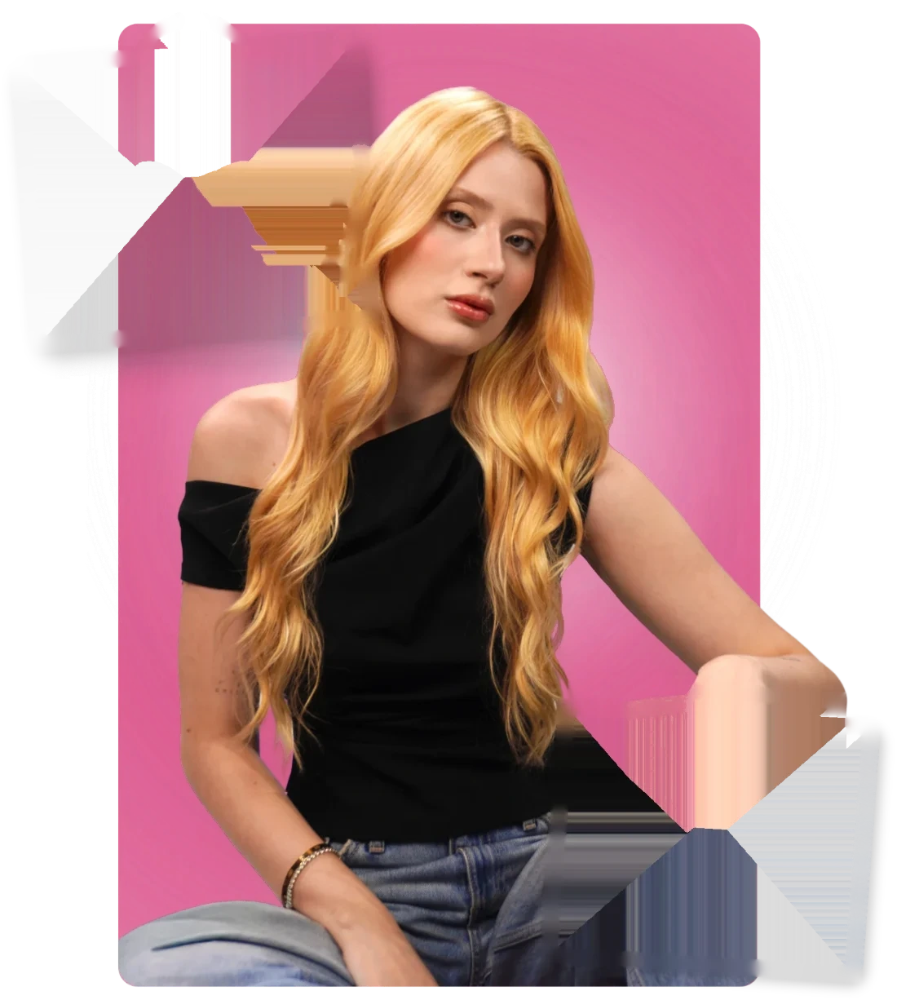
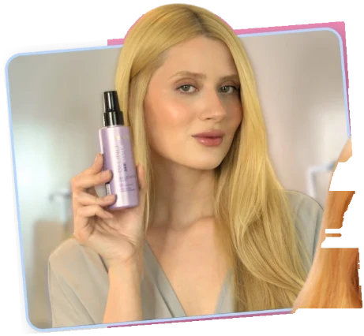
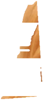
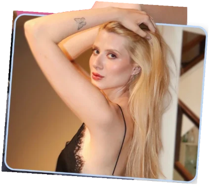

27 anos • Alphaville (SP)
Eu transformo produtos em conteúdos criativos que despertam curiosidade, interesse, desejo e identificação
Conteúdo com olhar criativo, estética e naturalidade, pensado
para aproximar marcas de pessoas reais.




Oie, eu sou a Luana!
Tenho 27 anos, sou formada em Marketing e atuo no mercado de influência como criadora de conteúdo UGC e estrategista criativa. Ao longo da minha trajetória, desenvolvi mais de 90 portfólios UGC para creators, aprofundando minha visão sobre posicionamento, construção de imagem e comunicação estratégica.
Também acumulo experiência na criação de conteúdos para marcas como Freegells, Bioderma e Creamy, além de ter trabalhado com a influencer Mariana Menezes no desenvolvimento de roteiros e na direção criativa de produções publicitárias.
- Tenho 27 anos
- Alphaville - SP
Marcas que confiaram no meu trabalho
Uma amostra do meu trabalho
Uma seleção de conteúdos que traduzem minha criatividade, versatilidade e identidade como criadora UGC.
O que levo para cada parceria
Estratégia, criatividade e sensibilidade visual a serviço de marcas que querem se conectar de verdade.
Que tipo de conteúdo você procura?
Explore meus vídeos por nicho e descubra diferentes formatos, estilos e possibilidades de criação. Deslize para o lado e confira!
Imagens que comunicam e convertem
São fotos pensadas para apresentar seus detalhes, destacar seus diferenciais e ajudar o público a enxergar valor naquilo que a marca oferece.
O que existe por trás de um vídeo UGC
Um vídeo não é só alguém diante da câmera. É um conjunto de habilidades, decisões criativas e estratégia trabalhando juntas para prender a atenção e gerar resultado.
Serviços pensados para vender
Do roteiro à entrega final, cada formato é pensado para o lugar onde ele vai rodar.
O que dizem as marcas
Bora criar juntos?
Me conta sobre a sua marca e o que você precisa. Eu respondo rapidinho com uma proposta pensada para o seu objetivo.
Mensagem enviada!
Obrigada pelo contato. Eu respondo em breve.